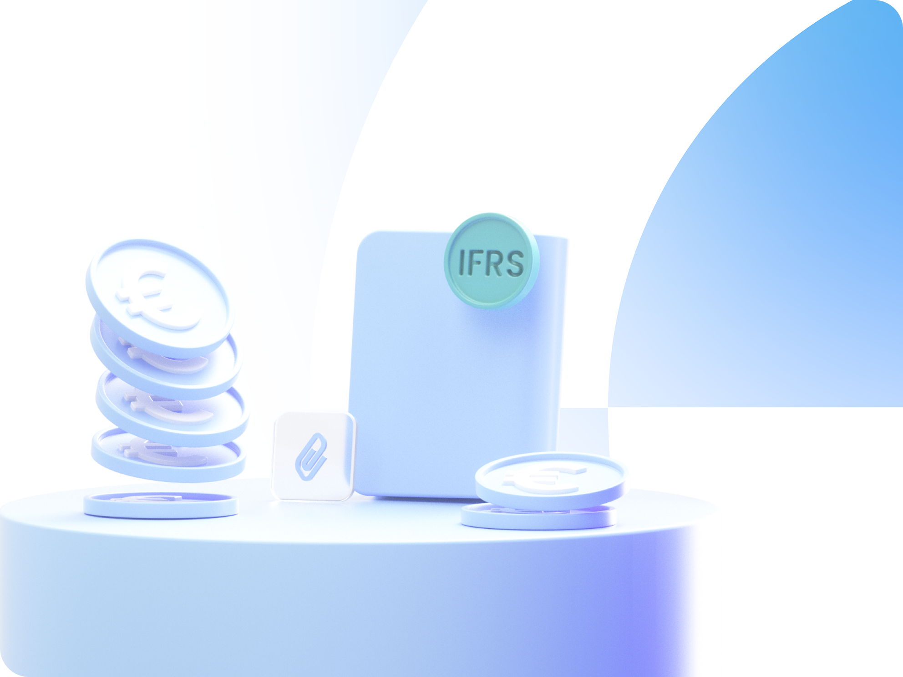
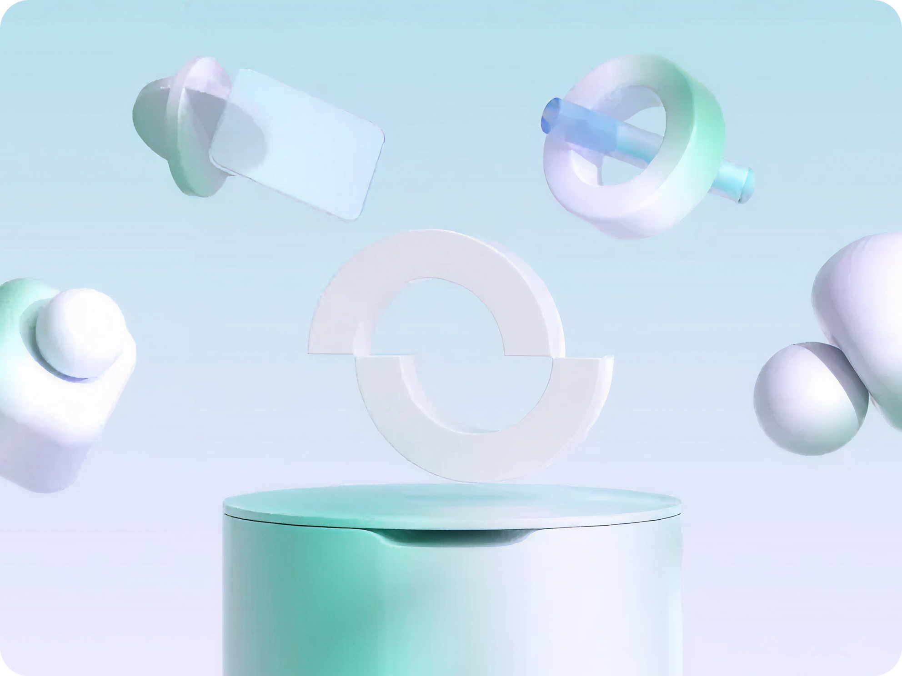
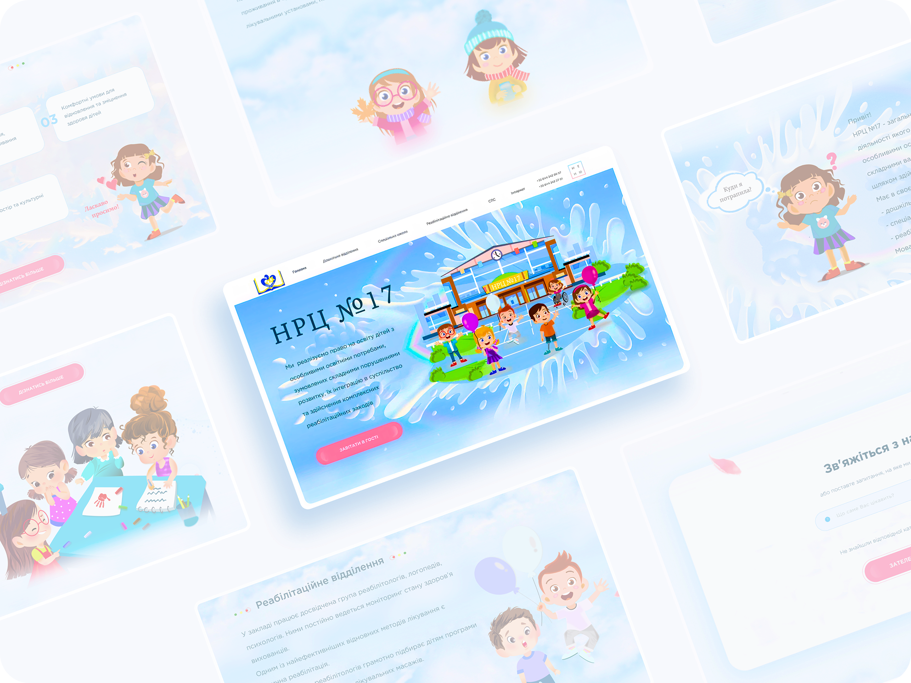

Selected work
-

Financial Reporting
2024For Optio I led the redesign of the financial reporting tools — replacing manual prep with a self-serve flow finance teams could trust for IFRS and board reporting.
-
Employee Portal
2023For Optio I led the redesign of the employee equity portal — making it easier for participants to understand what they hold and what to do next.
-

Optio Branding
2022I worked on a refreshed brand direction for Optio — a more modern, friendly visual system used across product and marketing.
-

ClickToSchool
2020I contributed to ClickToSchool, a charity project, by designing a friendly, accessible interface that was easy to navigate.
Tools I build
Prompt Library
I built a small prompt library in Figma Make to make AI more usable in my daily workflow — not just faster, but easier to structure, reuse, and adapt across different UX tasks.

More Projects on Behance
Check out my full portfolio featuring additional case studies, explorations, and design work.
View Behance PortfolioMy design philosophy
Every portfolio reflects a unique perspective. My design philosophy is to hold space for real human stories inside digital products. I believe good UX is not just usable, but emotionally honest: it respects people's time, energy, and limitations while helping businesses make clear, grounded decisions.